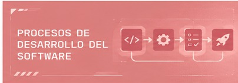
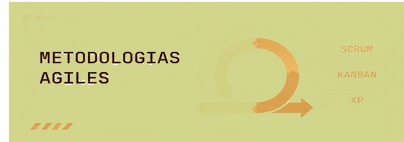
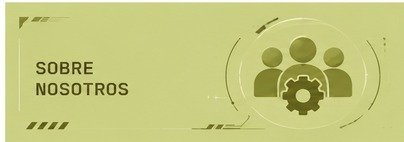

Gestión de la calidad del software
- Fundamentos de calidad (ISO 9126/25000).
- Técnicas de aseguramiento de la calidad.
- Herramientas de calidad.
Explora los fundamentos, técnicas y herramientas que permiten evaluar y asegurar la calidad del software



Conocé al equipo detrás del proyecto y nuestra motivación para crear este espacio.
Ver más →¿Tenés alguna sugerencia, consulta o feedback? ¡Escribinos!
Ver más →